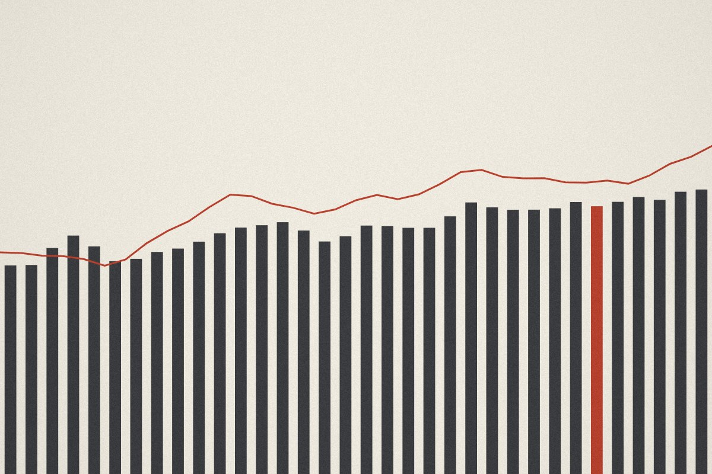
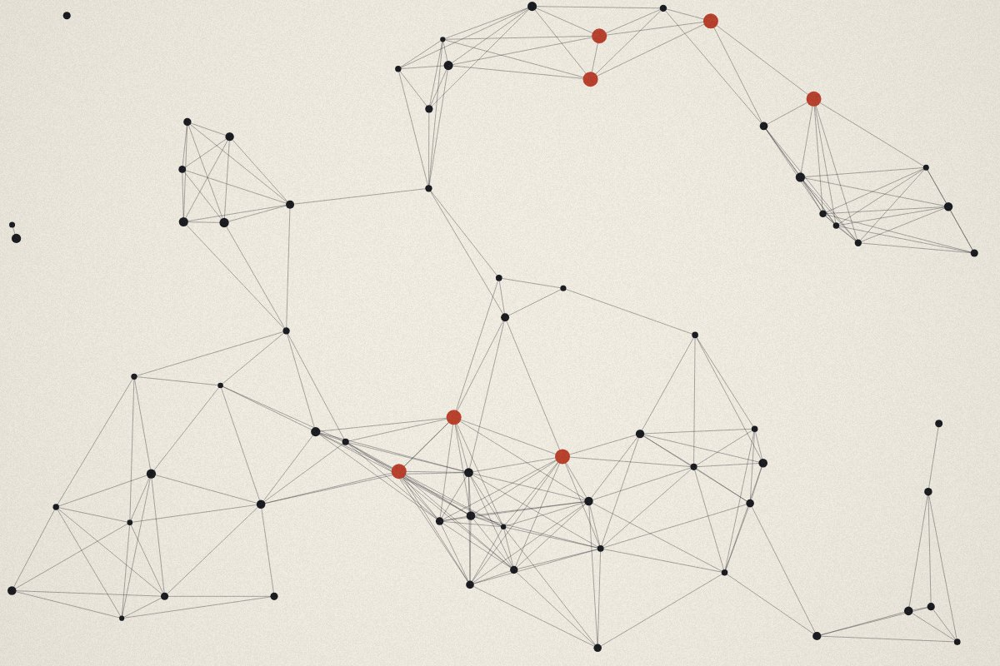
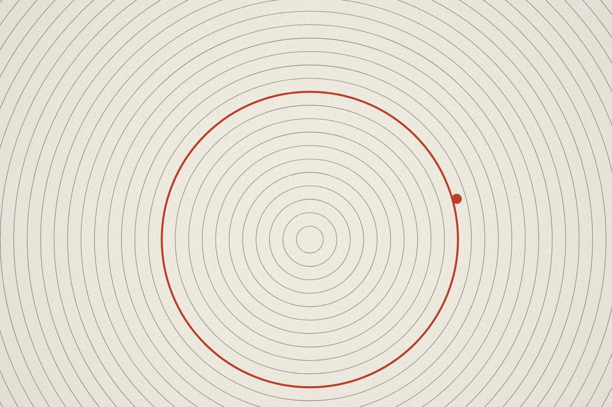
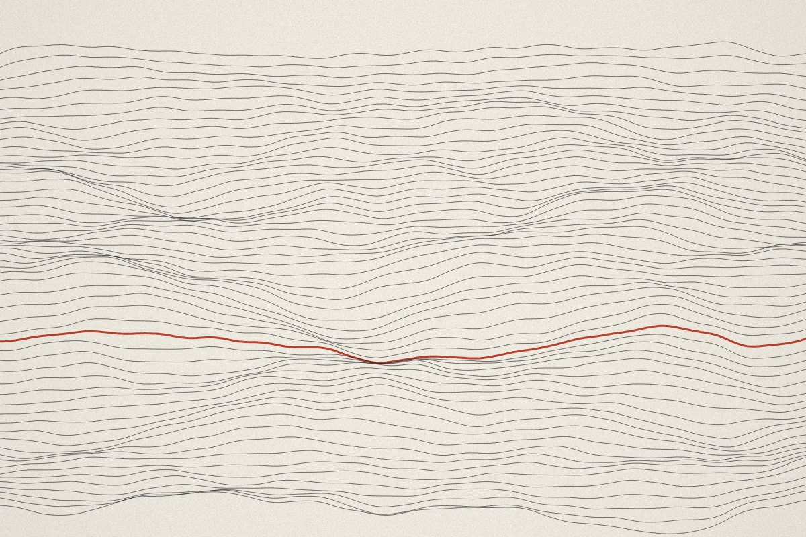
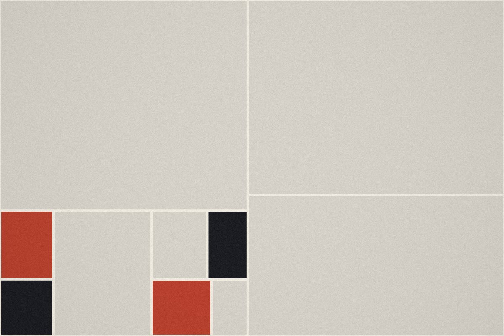
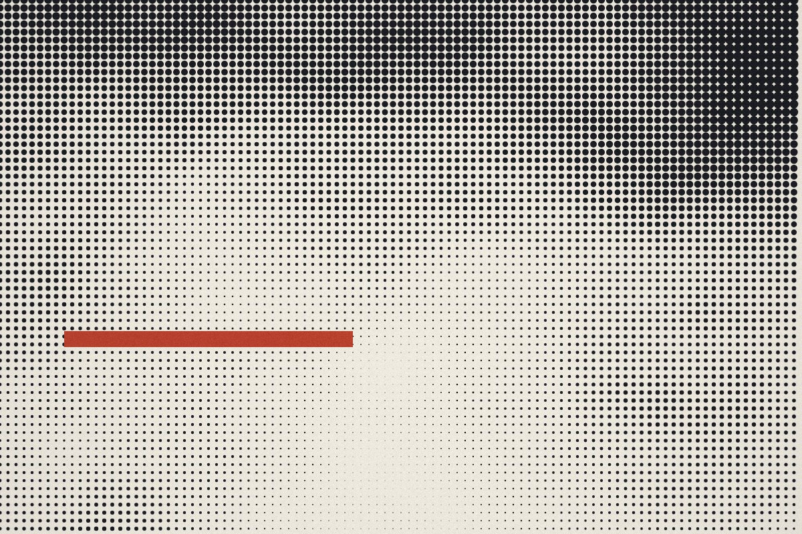

The cost curve of inference, and who it favours
Falling unit costs move the advantage from model builders to firms with proprietary workflows.
Insights / Technology & Disruption
Research on how data, automation and digital platforms are reshaping capital markets, operations and the client relationship. Published daily by the Northbridge research desk.
Our quarterly view: where automation is lowering costs, where it is concentrating returns, and the four questions we are asking every management team this season.
Falling unit costs move the advantage from model builders to firms with proprietary workflows.

Overnight sessions test clearing, margin and liquidity provision more than trading venues.

Composable finance stacks are winning mid-market deals that used to take five years to close.

We surveyed forty operations teams. Reconciliation leads; client onboarding lags.
Collateral mobility, not yield, is doing most of the work in adoption.

Supervisors are extending SR 11-7 thinking to systems that retrain every week.

Three vendors now account for most new warehouse spend in financial services.
Fewer listings, larger private rounds, and what it means for index investors.

Early evidence from wage data and margins, sector by sector.